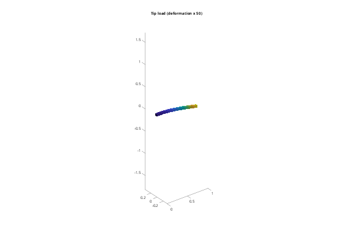

Contents
Tutorial 5 - Dofs, supports, loads and static analysis
This tutorial covers:
- the dof layout, selecting dofs with a.dof, mapping them with a.qdof
- supports in selected directions
- point loads, gravity, static solution and support reactions
addpath(fileparts(fileparts(mfilename('fullpath')))); out = fullfile(tempdir, 'femTutorials'); if ~isfolder(out), mkdir(out); end fembd.boxSTL(fullfile(out, 'beam.stl'), [0 0 0], [1000 50 50]); steel = fembd.material(210e9, 0.3, 7850); beam = fembd.Body(fullfile(out, 'beam.stl'), steel, Size = 25, Scale = 1e-3); L = 1; h = 0.05; EI = 210e9*h^4/12;
1. Dofs and selections
The full vector u holds 3 dofs per node, [ux1 uy1 uz1 ux2 ...], body after body. (Rigid bodies, couplings and joints add dofs at the end; see tutorials 6 and 7.) a.dof(body, sel, dirs) returns global dof indices. A selector is a function of the coordinates X (n x 3) or a list of node indices; dirs is a subset of 1:3.
a = fembd.Assembly(); a.add(beam); clamp = @(X) X(:,1) < 1e-9; tip = @(X) X(:,1) > L - 1e-9; dTip = a.dof('beam', tip, 3); % z dofs of the tip face fprintf('tip face: %d nodes\n', numel(dTip));
tip face: 37 nodes
2. Supports
a.fix(body, sel, dirs) sets the selected dofs to zero. Leaving out dirs clamps all three directions. For example, a roller support would be a.fix('beam', sel, 3). Here we clamp x = 0.
a.fix('beam', clamp);
[K, M, T] = a.system();
3. Static tip load
Loads are built in the full space and projected with T': the reduced load is fq = T'*f. Solve K q = fq, then recover u = T*q. The total load P is spread over the tip-face nodes. This gives the right resultant; by Saint-Venant's principle the deflection away from the tip is unaffected by how the load is distributed.
P = -1000; % N, downwards f = zeros(a.nDof, 1); f(dTip) = P/numel(dTip); u = T*(K\(T'*f)); uz = mean(u(dTip)); fprintf('tip deflection: FE %.4f mm, P L^3/(3 E I) = %.4f mm\n', 1e3*uz, 1e3*P*L^3/(3*EI)); % Within 0.3%: shear deformation (ignored by beam theory) softens the beam, % while the clamped face, which cannot contract laterally, stiffens it. figure('Color', 'w'); a.plot(u, 50); title('Tip load (deformation x 50)');
tip deflection: FE -3.0389 mm, P L^3/(3 E I) = -3.0476 mm

4. Support reactions
The support reactions are the internal forces at the supported dofs: r = Kfull*u - f, using the unconstrained K from a.assemble(). Their sum is equal and opposite to the applied load.
[Kfull, Mfull] = a.assemble(); r = Kfull*u - f; fprintf('sum of z reactions: %.3f N (applied %.0f N)\n', sum(r(a.dof('beam', clamp, 3))), P);
sum of z reactions: 1000.000 N (applied -1000 N)
5. Gravity
A body force is a distributed inertia load: f = Mfull * g, where g holds the acceleration at every node dof. For a uniform load q = rho A g, the tip deflection is q L^4/(8 E I).
g = zeros(a.nDof, 1); g(3:3:end) = -9.81;
ug = T*(K\(T'*(Mfull*g)));
q = -7850*h^2*9.81;
fprintf('gravity sag: FE %.4f mm, q L^4/(8 E I) = %.4f mm\n', 1e3*mean(ug(dTip)), 1e3*q*L^4/(8*EI));
gravity sag: FE -0.2192 mm, q L^4/(8 E I) = -0.2200 mm
6. Working in q directly
a.qdof(d) maps global dofs to positions in q, so u(d) = q(a.qdof(d)). This is useful for building small input/output matrices directly in the reduced space. Fixed and dependent dofs have no position in q; qdof gives an error for them.
j = a.qdof(dTip(1)); Bq = sparse(j, 1, 1, size(K, 1), 1); % unit force on one tip dof Cq = Bq'; % its displacement as output fprintf('point compliance at a tip node: %.3e m/N\n', full(Cq*(K\Bq)));
point compliance at a tip node: 3.050e-06 m/N